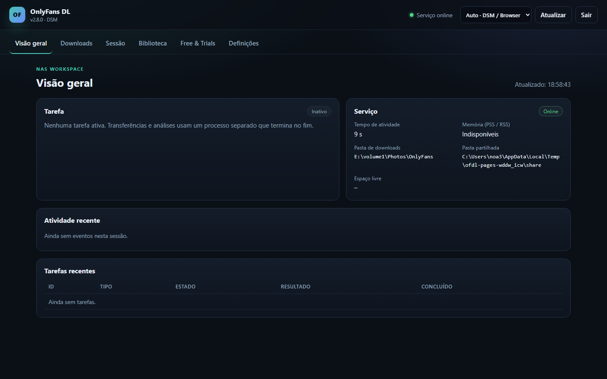

A sua biblioteca, diretamente no NAS.
Um pacote DSM 7.2 nativo para o transferidor OnlyFans. Instala um ambiente Python 3.13 privado e inicia uma pequena interface web no NAS. Transferências, análises de subscrições e pré-visualizações são executadas num processo de trabalho separado e temporário.
O que faz
Pacote nativo
Instalação pelo Package Center. Para o uso normal não são necessários passos manuais de Python, pip ou SSH.
Serviço de controlo pequeno
O serviço permanente usa apenas a biblioteca padrão. As bibliotecas pesadas são carregadas apenas pelo processo temporário.
Interface web
Importação e teste de sessão, seletor de pastas, escolha de criadores, transferências, pausa/cancelamento, agendamento e estado.
Biblioteca existente
Reutiliza ficheiros, estrutura de pastas, ficheiros .part e o manifesto .ofdl.sqlite3 existente.

Instalação
- Adicionar a fonte SynoCommunity.
Package Center → Definições → Origens de pacotes →https://packages.synocommunity.com/ - Instalar o SPK.
Package Center → Instalação manual. O Python 3.13 é instalado como dependência. - Definir a palavra-passe web.
O assistente pede uma palavra-passe. Abra depois o pacote no menu DSM ouhttp://<IP-DO-NAS>:8765/. - Escolher uma pasta e importar uma sessão.
No DSM, conceda asc-onlyfansdlacesso Leitura/Escrita apenas à pasta partilhada escolhida (Permissões → Utilizador interno do sistema). Guarde um caminho de biblioteca existente nas Definições. Nenhuma pasta partilhada é criada automaticamente.
Modelo de segurança
O pacote é executado com a conta de serviço DSM sem privilégios sc-onlyfansdl.
Não pede root nem pertença ao grupo de administradores. A interface web tem a sua própria palavra-passe;
não é o SSO do DSM. A sessão é guardada com modo 0600 e nunca é escrita em definições ou registos.
Para acesso remoto, coloque o proxy inverso HTTPS do DSM à frente da porta 8765. Não exponha a porta diretamente à Internet.
Armazenamento e compatibilidade
Biblioteca
Um único caminho guardado explicitamente nas Definições para transferências, biblioteca e agendamento. Os ficheiros permanecem no lugar. As atualizações exigem confirmar o caminho; as pastas partilhadas antigas não são eliminadas.
Memória
O serviço de controlo permanece pequeno. O processo de trabalho termina após cada tarefa. O objetivo de 50 MiB PSS em repouso ainda não foi verificado no DS723+.
Agendamento
Uma hora diária pode iniciar as definições de transferência guardadas. Nunca é executada mais de uma tarefa em simultâneo.
Idioma e início de sessão
Sete idiomas de interface, incluindo textos principais em italiano, neerlandês e português. O modo Auto usa o idioma DSM disponível e depois o navegador; a escolha manual tem prioridade. Textos em falta voltam a inglês/alemão. A sessão mantém-se após recarregar e atualizar.
Estado e recuperação
Recarregar restaura a tarefa atual e os últimos eventos. Análise e transferência de ficheiros têm indicadores separados. Erros temporários da API mostram uma espera de três minutos cancelável.
Free & Trials
Pesquisa só de leitura e renovação diária opcional apenas para perfis explicitamente autorizados e novamente verificados como permanentemente gratuitos. As provas ficam no site devido a possível renovação paga. Uma alteração de preço entre a verificação e a resposta não pode ser totalmente excluída.
Documentação
README
Visão geral, instalação e notas de versão (EN).
Instalação
Configuração DSM passo a passo, consentimento de armazenamento e resolução de problemas (EN).
Arquitetura
Serviço de controlo, processo de trabalho, tarefas SQLite e permissões (EN).
Relatório de testes
Resultados locais e lista de verificação de hardware DSM (EN).
Segurança
Gestão de sessão, exposição e reposição (EN).
Fiabilidade
Reconexão, paragem completa e limites da renovação gratuita (EN).